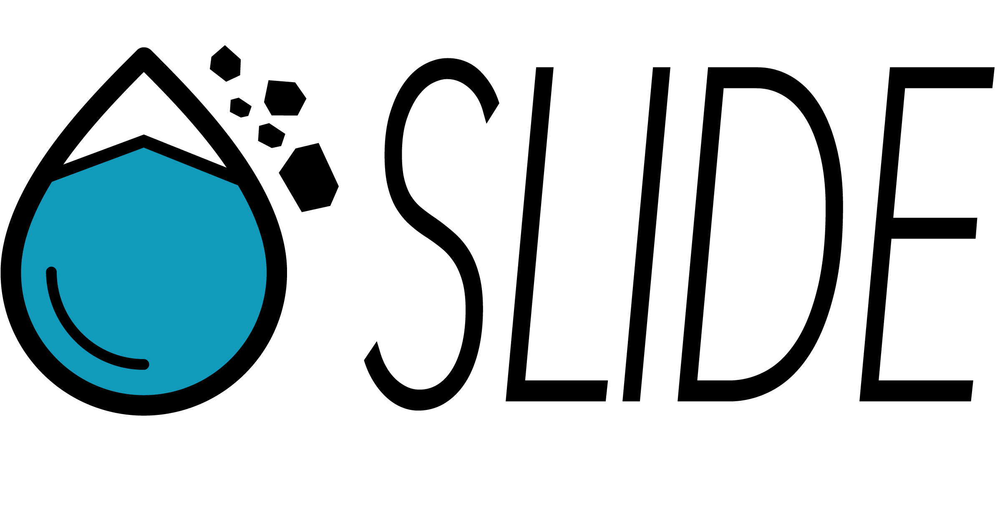

<!-- <div id="splashId" class="js-modal modal-overlay modifier-class" data-modal="foo">
    <div class="modal-content column-12" role="dialog" aria-labelledby="modal" role="dialog">
  
      <a class="js-modal-toggle right" href="#" aria-label="close-modal">
        <svg xmlns="http://www.w3.org/2000/svg" width="21" height="21" viewBox="0 0 32 32" class="svg-icon"><path d="M18.404 16l9.9 9.9-2.404 2.404-9.9-9.9-9.9 9.9L3.696 25.9l9.9-9.9-9.9-9.898L6.1 3.698l9.9 9.899 9.9-9.9 2.404 2.406-9.9 9.898z"/></svg>
      </a>
  
      <h3 class='trailer-half'>Modal!</h3>

      <label>
        Location
        <input type="text" placeholder="Enter Address" class="modifier-class" required>
      </label>
  
      <div class="text-right">
          <button class="btn js-modal-toggle">okay</button>
          <button class="btn btn-clear js-modal-toggle">cancel</button>
      </div>
    </div>
  </div> -->


<div id="splashWindowWrap">
    <div id="splashWindow">
        <div class='panel padding-left-4 padding-right-4'>
            <div id="closeIcon" class="icon-ui-close js-hide-splash"></div>
            
            <!-- <h3>Location</h3> -->
            <div class="bg-img-div">
                    <!--  -->
            </div>
            <!--  -->
            
            <h4 id="splashTitle">
                    The <i>SLIDE</i> app, built for Esri's HACK-THE-MAP-3, 
                    determines structures susceptible to mudslides based on current precipitation forecasts & landslide risk analysis.
                </h4>
            
            <!-- <input id="splashInput" type="text" placeholder="Enter city" class="modifier-class input-search"> -->
            <button id="splashSearchButton" class="btn btn-large js-hide-splash js-searchTheArea-btn">LAUNCH APP</button>
            <!-- <button id="splashCancelButton" class="btn btn-clear js-hide-splash">Cancel</button> -->
        </div>
    </div>
</div>
